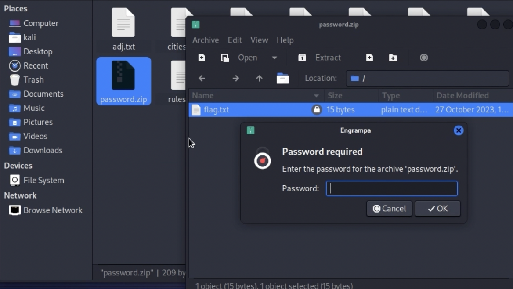
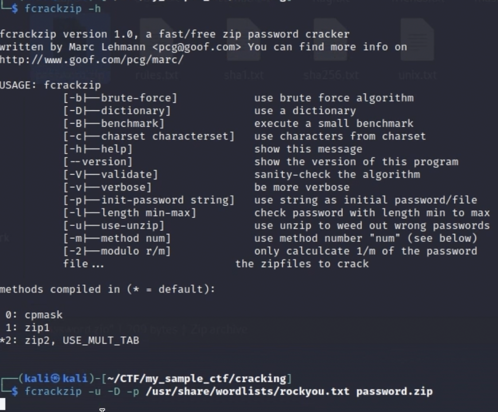
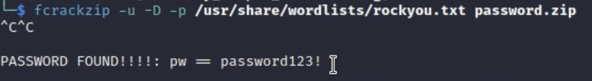
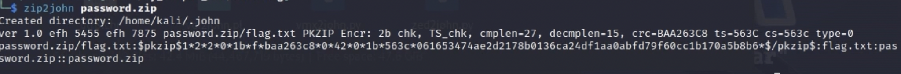
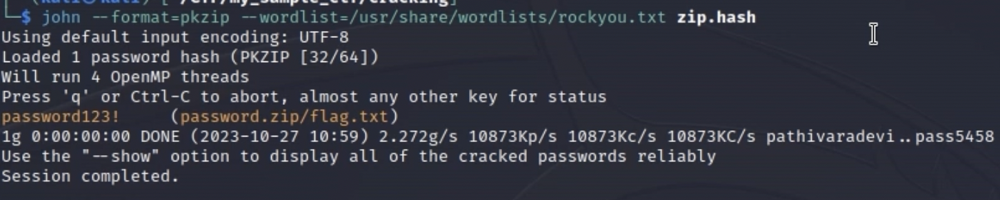

Zip File Cracking

So in this CTF challenge, I am given a zip file that I have to crack the password of it to extract the flag inside the zip. As you can see in the screenshot below, whenever I try to extract the flag.txt file, I am met with a prompt to type a password that I do not know
Now there are two ways that I can go about this problem. One is that I can use a utility called fcrackzip. This is one of the standard tools thats apart of the kali software repositories so if you don't have it on your machine you can just do sudo apt install fcrackzip.
I first did fcrackzip -h. The -h flag basically tells me the "help" manual for the command. The main flags I will be using is the u, D, and p flag. The -u flag tells fcrackzip that we actually want to unzip the zip file. the -D flag makes it so that we use a dictionary attack where we provide a list of commonly used passwords and try to brute force our way in. Lastly the -p flags makes it so that it tells fcrackzip to use a password list (a file containing candidate passwords), or a literal password string if you pass one directly. In practice you combine -D and -p to feed fcrackzip a wordlist file and have it try each entry while attempting to unzip the archive. After providing the flags, I then supply the rockyou.txt file (the file that contains all the common passwords) and then the encrypted zip file.
After a few minutes, you can see that fcrackzip found the password!.

I mentioned that there were two ways that we can solve this. The other way is by using a utility called JohnTheRipper. Now if you are not familiar with JohnTheRipper, its a password cracking application that uses brute force too. Both fcrackzip and JohnTheRipper have their strengths, however one thing I like about JohnTheRipper is that it has a number of different utilities that you can run with it to actually convert different password types into hashes that are actually crackable. As you can see in the screenshot above there are a bunch of different scripts to convert these different hashes. These scripts are nice but the one that I want to use is called zip2john.
Now if I do zip2john and then the zip file, its then going to actually output a special type of hash that is designed for JohnTheRipper to actually crack that password hash. What im going to do is output the command to a file called zip.hash by doing the command again zip2john password.zip > zip.hash
Now that I actually have the file that contains the hash, I am going to run john --format=pkzip --wordlist=/usr/share/wordlists/rockyou.txt zip.hash. The format flag just tells the format that the file was zipped in. The wordlist flag specifies the file that contains the common passwords that we will be using to brute force the password. Then you just have to provide the zipped file you want to crack. And we see we got the password!